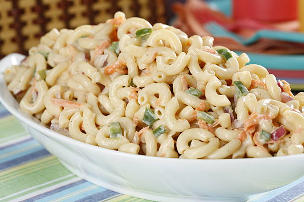

Macaroni Salad

This creamy potato salad is a guaranteed hit, whether it’s served alongside
a juicy burger or at your next family picnic. The key is balancing the creamy
mayo with a touch of tangy mustard, and don’t forget to toss in a handful of crisp
celery for some crunch. Garnish with paprika or fresh parsley if you’re feeling fancy!
Ingredients
- 1 cup mayonnaise (Optional)
- ¼ cup white vinegar
- 2 tablespoons Dijon mustard
- 2 teaspoons kosher salt, or more to taste
- ½ teaspoon ground black pepper
- ⅛ teaspoon cayenne pepper
- 1 tablespoon white sugar, or more to taste
- 1 cup finely diced celery
- ¾ cup diced red bell pepper
- ½ cup grated carrot
- ½ cup chopped green onions, white and light parts
- ¼ cup diced jalapeño pepper
- ¼ cup diced poblano pepper
Steps
- Whisk mayonnaise, vinegar, Dijon, salt, black pepper, and cayenne together in a
bowl until well blended. Whisk in sugar, then stir in celery, bell pepper, carrot,
green onions, jalapeño pepper, and poblano pepper. Cover and refrigerate until
macaroni is ready.
- Bring a large pot of generously salted water to a boil. Cook macaroni in the
boiling water, stirring occasionally, until tender but firm to the bite, about
8 minutes. Drain but do not rinse.
- Let macaroni drain in a colander for about 5 minutes, shaking out the moisture
from time to time. Pour macaroni into a large bowl; toss to separate and let cool
to room temperature, 10 to 15 minutes. Macaroni should be sticky.
- Pour dressing over macaroni and stir until evenly distributed. Cover and
refrigerate until macaroni absorbs the dressing, at least 4 hours or overnight,
if possible.
- Stir salad before serving. Mix water and remaining mayonnaise into salad for a fresher
look.
Recipe was heavily inspired by Chef John's Classic Macaroni salad.
Home